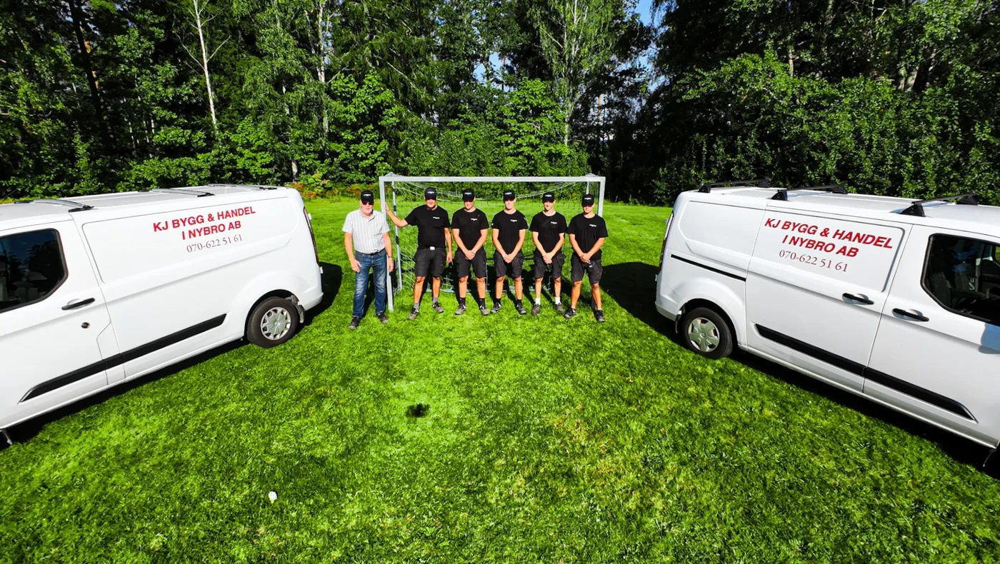

Dina idéer.
Vårt hantverk.
Nybyggnation, renovering och byggservice i Nybro. Från din första idé till den sista detaljen.
Grundat i Nybro.
Fortfarande på hemmaplan.
Vi bygger hus.
Och goda relationer.
Hos oss möter du människor som kan sitt hantverk och bryr sig om ditt projekt. Med rötter i Nybro sedan 1983 tar vi oss an allt från mindre snickeriarbeten till nybyggda hus.
Lär känna ossDitt hus.
Våra möjligheter.
Från första ritningen till
den sista listen.
Ett nytt kapitel, från grunden.
Ett nytt hem börjar med dina idéer. Vi bygger lösvirkeshus och monterar prefabricerade hus, med omtanke om både helheten och detaljerna.
Mer om nybyggnation
Mer plats för det du tycker om.
Familjen växer, behoven förändras. Vi hjälper dig att bygga till och skapa mer utrymme, med hänsyn till huset som redan finns.
Mer om tillbyggnation
Ta vara på det du redan har.
Från ett nytt kök till en större förändring av huset. Vi renoverar för en vardag som fungerar bättre och hjälper dig med material och genomförande.
Mer om renovering
De små detaljerna gör huset helt.
Nya fönster, ett tak som behöver ses över eller en uteplats att längta till. Vi tar oss an både mindre arbeten och större byggprojekt.
Mer om byggserviceDet sitter
i detaljerna.
Från ett nytt kök till mer plats utomhus. Se ett urval av våra egna arbeten.
Alla bilder & inspirationHantverk, hela vägen ut.
Nytt liv i stugan.
Mer rum under bar himmel.
Plats för nästa kapitel.
Omsorg i varje stav.
Rum för rörelse.
Vad skulle du vilja göra med ditt hus?
Prata med oss om din idé
Ett lokalt lag.
En lång historia.
Kenneth Johansson startade KJ Bygg 1983. År 2023 tog Tony Ideström över. I dag fortsätter vi att bygga med samma engagemang för yrket, kunden och det färdiga resultatet.
Det här är KJ ByggVi fortsätter bygga.
En bra byggresa
börjar med ett samtal.
- 01
Vi lyssnar.
Vi pratar om dina idéer, behov och förutsättningar. Tillsammans sätter vi riktningen.
- 02
Vi planerar.
Material, omfattning och tidsplan blir till ett tydligt underlag och en offert.
- 03
Vi bygger.
Vi utför arbetet och håller dialogen levande. Vid behov samarbetar vi med andra yrkesgrupper.
- 04
Vi går igenom.
När arbetet är klart går vi igenom resultatet tillsammans med dig.
Vad vill du
bygga vidare på?
Stort eller litet. Färdig ritning eller en första tanke.
Hör av dig så börjar vi där du är.